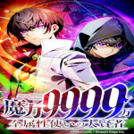
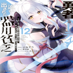

 class="pic"<!DOCTYPE html>
<html lang="pt-br">
<head>
    <meta charset="UTF-8">
    <meta name="viewport" content="width=device-width, initial-scale=1.0">
    <title>Mangá</title>
    <link rel="stylesheet" href="../style.css">
</head>
<body>
    <main>
    <h1>Mangá</h1>

    <ul>
        <ol><a href="https://mangadex.org/chapter/11494fd7-17c4-4fc7-a469-79ff59c511ab/5" target="_blank"><h4>Garbage brave Cap.0</h4></a></ol>


        <ol><a href="https://mangadex.org/title/4017de66-fe69-4e46-baa8-787c399de6d2/magic-level-99990000-all-attribute-great-sage" target="_blank"><h4>Magic Level 99990000 Cap.0</h4></a></ol>


        <ol><a href="https://chapmanganato.to/manga-te996839/chapter-1" target="_blank"><h4>Custest Girls closest to me Cap.0</h4></a></ol>


        <ol><a href="https://mangadex.org/chapter/67660a32-7f56-4fbd-8b39-c6566a5b8c01/2" target="_blank"><h4>Jack-of-all-trades Cap.0</h4></a></ol>


        <ol><a href="https://mangadex.org/chapter/8bb30d66-9434-4c02-b6d1-5adcf9368c8f/1" target="_blank"><h4>Damedol to Sekai Cap.32</h4></a></ol>


        <ol><a href="https://mangakakalot.com/manga/wu928266" target="_blank"><h4>Tsundere Childhood Cap.16</h4></a></ol>


    </ul>
</main>
<a href="../index.html" rel="back"></a>
</body>
</html>